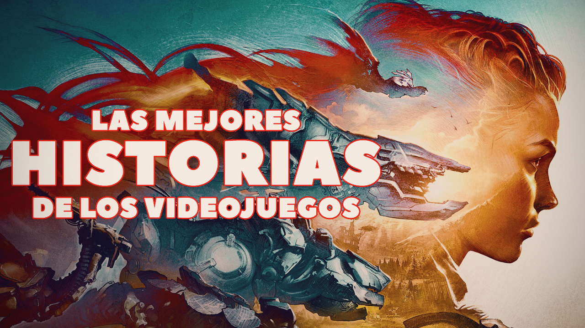
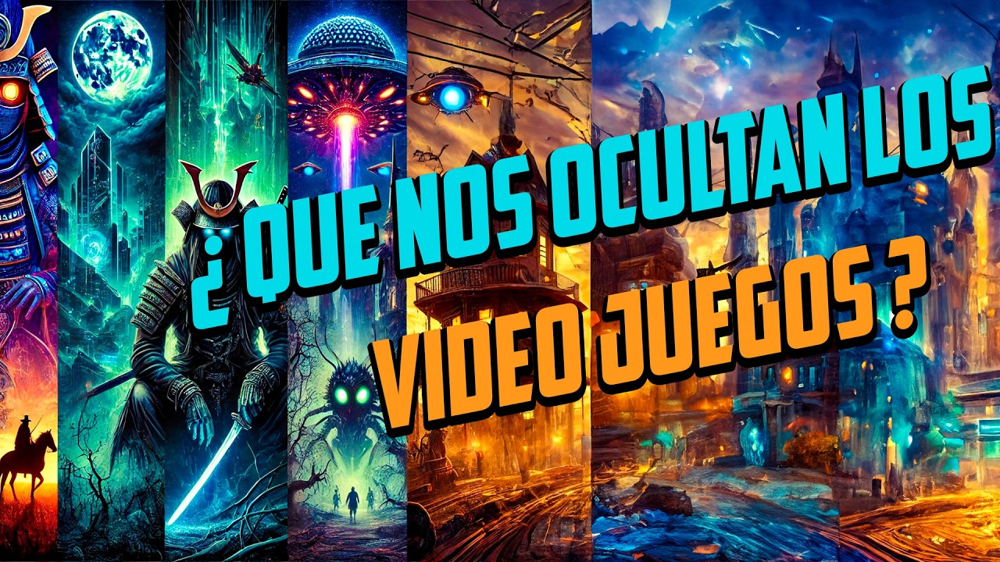

Muchos videojuegos esconden historias profundas, secretos ocultos y teorías creadas por los jugadores. El lore permite descubrir detalles escondidos que conectan personajes, mundos y eventos.

Los easter eggs y secretos son parte importante de la cultura gamer. Muchos jugadores pasan años investigando detalles ocultos en sus videojuegos favoritos.
